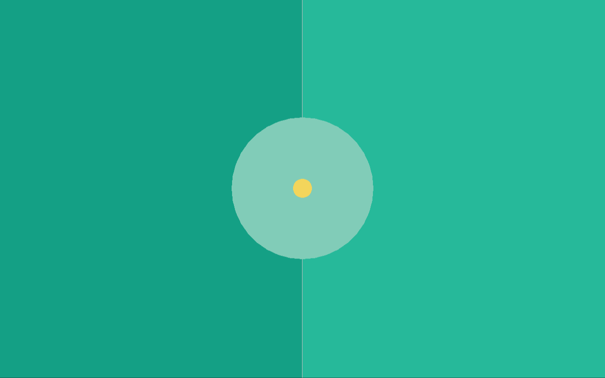
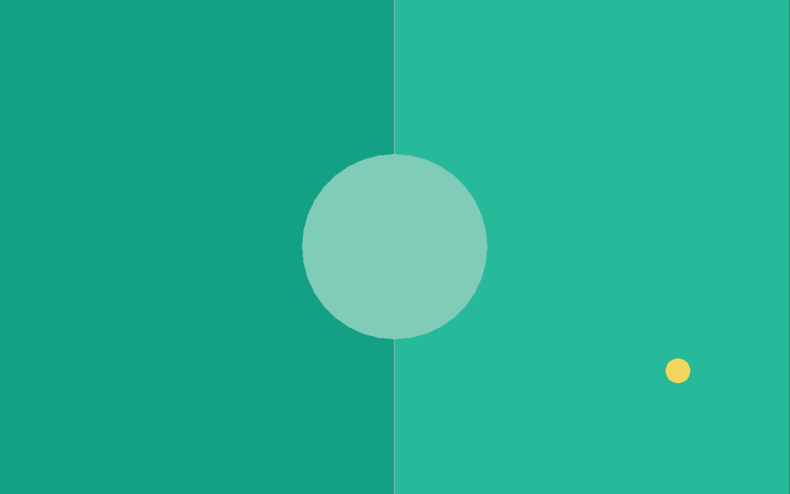

The Ball
The next thing we want to add is the ball itself. It is added before any players because of the file dependencies, the ball is self-contained which makes it easy to implement first.
A simple ball
We start by defining the data our ball will need. The ball moves in a given direction, which means it needs a direction, a position, a speed and of course a size too. So, we end up with this data structure for the ball:
ball.ft:
use Fip.raylib as rl
use "colors.ft"
data DBall:
f32x2 pos = f32x2(0, 0);
f32x2 dir = f32x2(0, 0);
f32 speed = 0;
f32 radius = 20;
DBall(pos, dir, speed, radius);
We will not need a reusable func module for the ball here, a simple monolithic entity is plenty. So, we just define our Ball entity with entity functions in it. For now, we will just add one function to the Ball entity: draw.
entity Ball:
data: DBall ball;
Ball(ball);
const def draw():
rl.DrawCircle(i32(ball.pos.x), i32(ball.pos.y), ball.radius, Colors.yellow);
The balls color is yellow. As you can see, the position, direction and speed of the ball are all implemented as floating point values but the DrawCircle function expects values of type i32 for the x and y position when rendering. It is generally recommended to store positions, directions etc always as floating point numbers, as in games we often do incremental changes (move a tiny bit) each frame, those incremental changes would get lost entirely when using integer values.
Creating and drawing
Now that we created the ball.ft file we want to create and render the ball in the game loop. So, we add the use "ball.ft" clausel to the main file and then we create the ball before entering the main loop:
// Initialize game objects
ball := Ball(DBall(f32x2(screen / 2), f32x2(1, 1), 100, 20));
while not rl.WindowShouldClose():
// ...
// Draw the game objects
ball.draw();
rl.EndDrawing();
If you now compile and run the game, the ball will be drawn centered in the middle of the game window.

If you resize the game, however, the ball does stay in the same absolute position offset to the top left corner of the screen. This is something we have not talked yet about, since we put everything at half the screen up until now. The position (0, 0) in raylib is the top left corner. Downwards means positive y and rightwards means positive x. So, if you want an object to move to the upper left, both directions need to be negative. This knowledge is very important for the next segment.
Moving the ball
To be able to move the ball, we need to know how much time has passed since the last frame. We could just call the GetFrameTime() function from raylib, but I want to practically use the time Core module here to showcase the exact same thing. As a baseline, this is how the main.ft looks now:
main.ft:
use Fip.raylib as rl
use "colors.ft"
use "ball.ft"
def main():
// Screen setup
i32x2 screen = (1280, 800);
u32 flags = u32(rl.ConfigFlags.FLAG_WINDOW_RESIZABLE);
flags += u32(rl.ConfigFlags.FLAG_VSYNC_HINT);
rl.SetConfigFlags(flags);
rl.InitWindow(screen.x, screen.y, "Pong");
// Initialize game objects
ball := Ball(DBall(f32x2(screen / 2), f32x2(1, 1), 100, 20));
while not rl.WindowShouldClose():
screen = (rl.GetScreenWidth(), rl.GetScreenHeight());
rl.BeginDrawing();
// Draw the game board
rl.ClearBackground(Colors.dark_green);
rl.DrawRectangle(screen.x / 2, 0, screen.x / 2, screen.y, Colors.green);
rl.DrawLine(screen.x / 2, 0, screen.x / 2, screen.y, Colors.white);
rl.DrawCircle(screen.x / 2, screen.y / 2, 150.0, Colors.light_green);
// Draw the game objects
ball.draw();
rl.EndDrawing();
rl.CloseWindow();
The first thing we need to do is to add
use Core.time
at the very top to include the time Core module in the main.ft file. To calculate the time which passed between frames (delta time) we just compare the TimeStamp of the last frame with the current new TimeStamp of this frame. So, we need to start by adding
TimeStamp last_frame = now();
while not rl.WindowShouldClose():
before the loop to keep track of the time stamp of the last frame. We do not get the last frame / current frame difference at the very top of the loop, we actually do it right in the middle, after drawing the game board itself but before drawing the game objects. So, before drawing the ball we need to add those lines right here:
// Get the delta time
TimeStamp current_frame = now();
Duration frame_duration = duration(last_frame, current_frame);
f32 delta = f32(as_unit(frame_duration, TimeUnit.S));
last_frame = current_frame;
We get a time stamp (now()) to get the current absolute time. We then calculate the frame difference (frame_duration) as a difference between the two time stamps, and then use the as_unit function to give the time difference a unit, in our case TimeUnit.S for seconds. If the game runs at 60 FPS for example, the delta will now have the value of 0.0166667 seconds or roughly 16.67 milliseconds. This is how we can get the delta time in the main loop.
The next thing which needs to be done is to add an update function to the Ball entity like so:
def update(f32 delta):
ball.pos += ball.dir * (delta * ball.speed);
It is recommended to put all const functions (functions not mutating local state of the entity / func module) at the top and mutable functions (no const) below them. This function is rather simple, we just incrementally update the ball position by adding it's direction updated with it's speed and the frame delta. This means that the ball will move ball.speed pixels in the direction of ball.dir per second. The "per second" part is the one why we need the delta.
Now that we have the update function on the ball, we can call the update function of the ball in the main.ft file:
last_frame = current_frame;
// Update game objects
ball.update(delta);
We add this code after getting the delta (since we use it) but before calling ball.draw(). If you try to run this program, you will see that the ball moves to the bottom right, that's because the dir is set to be f32x2(1, 1) so it just moves to the bottom right with a speed of 100 pixels per second (actually, 141 pixels per second because the direction is not normalized).
Randomizing the ball direction
For now the ball will always fly to the bottom right. But the ball should either fly to the left or the right when spawning, with a randomized angle in each direction. For this, we will add a reset function to the ball which resets its position, direction, and speed.
def reset():
i32 angle_deg = rl.GetRandomValue(-40, 40);
i32 left_or_right = rl.GetRandomValue(0, 1);
angle_deg += 180 * left_or_right;
const f32 pi = 3.141592;
const f32 angle_rad = (f32(angle_deg) * pi) / 180.0;
f32x2 ball_dir = (cos(angle_rad), sin(angle_rad));
ball.speed = 400.0;
ball.dir = ball_dir;
ball.pos = f32x2(rl.GetScreenWidth() / 2, rl.GetScreenHeight() / 2);
Since we call mathematical functions here, we need to include the Core.math module at the very top to gain access to cos and sin. I will not explain the mathematics here. We get a random angle between -40 and 40 degrees and randomly choose whether the ball will fly to the left or to the right and then we reset the ball to start at the middle of the screen and set the speed and direction to their respective default values.
This means that in the main.ft file, we now no longer need to properly initialize the ball at all, we can change the ball initialization line to these two lines instead:
ball := Ball(DBall(_));
ball.reset();
As you can see, the ball now flies in a random direction on program startup, but it just flies off the screen forever.
Colliding with the walls
This system will be changed a bit in a later chapter when we actually implement a proper collision system, but for now it would be great if the ball would just bounce off all four edges of the screen. To accomplish this, we first need to add two more functions to the ball, reflect_v and reflect_h. The reflect_v reflects the direction vertically (when colliding with left or right) while the reflect_h reflects it horizontally (when colliding with top or bottom):
def reflect_v():
ball.dir = ball.dir * (-1.0, 1.0);
def reflect_h():
ball.dir = ball.dir * (1.0, -1.0);
These functions only flip the x or y axis respectively. Okay, with these functions now added, we only need to update the update function:
def update(f32 delta):
ball.pos += ball.dir * (delta * ball.speed);
const bool bounce_top = ball.pos.y - ball.radius < 0 and ball.dir.y < 0;
const bool bounce_bottom = ball.pos.y + ball.radius > f32(rl.GetScreenHeight()) and ball.dir.y > 0;
const bool bounce_left = ball.pos.x - ball.radius < 0 and ball.dir.x < 0;
const bool bounce_right = ball.pos.x + ball.radius > f32(rl.GetScreenWidth()) and ball.dir.x > 0;
if bounce_top or bounce_bottom:
self.reflect_h();
if bounce_left or bounce_right:
self.reflect_v();
and now, when you try to run the program, the ball actually collides with all four sides and bounces off within the screen. Also, if the ball goes off screen (for example when you resize it) it will always fly back into the screen. If we would remove the and ball.dir.(x or y) (> or <) 0 checks then the ball would flip every single time update is called, so it would "vibrate" at the same position outside the screen. But through this check we ensure that the ball always "comes back" to the screen.
